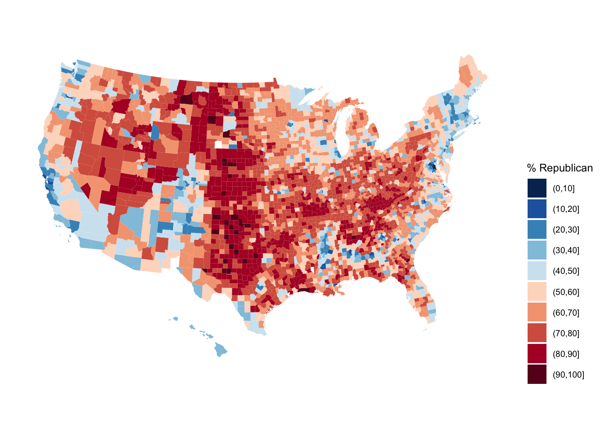

── Attaching core tidyverse packages ──────────────────────── tidyverse 2.0.0 ──
✔ dplyr 1.1.4 ✔ readr 2.1.5
✔ forcats 1.0.0 ✔ stringr 1.5.1
✔ ggplot2 3.5.1 ✔ tibble 3.2.1
✔ lubridate 1.9.4 ✔ tidyr 1.3.1
✔ purrr 1.0.2
── Conflicts ────────────────────────────────────────── tidyverse_conflicts() ──
✖ dplyr::filter() masks stats::filter()
✖ dplyr::lag() masks stats::lag()
ℹ Use the conflicted package (<http://conflicted.r-lib.org/>) to force all conflicts to become errors12 Load tidyverse & data
# Get a background map
library(socviz)
data(county_map)
# Make a choropleth map
library(RColorBrewer) # For the color scale
library(ggthemes) # For theme_map
elections |>
mutate(county_fips = as.character(county_fips)) |>
mutate(county_fips =
ifelse(nchar(county_fips) == 4, paste0("0", county_fips), county_fips)) |>
ggplot(aes(map_id = county_fips, fill = cut(repub_pct_20, breaks = seq(0, 100, by = 10)))) +
geom_map(map = county_map) +
scale_fill_manual(values = rev(brewer.pal(10, "RdBu")), name = "% Republican") +
expand_limits(x = county_map$long, y = county_map$lat) +
theme_map() +
theme(legend.position = "right") +
coord_equal()
#Exercise 1
# Define elections_small
elections_small <- elections |>
select(state_name, county_name, total_votes_20, repub_pct_20, dem_pct_20, total_votes_16, dem_pct_16)
# Check out the first 6 rows to confirm your code did what you think it did!
head(elections_small) state_name county_name total_votes_20 repub_pct_20 dem_pct_20
1 Alabama Autauga County 27770 71.44 27.02
2 Alabama Baldwin County 109679 76.17 22.41
3 Alabama Barbour County 10518 53.45 45.79
4 Alabama Bibb County 9595 78.43 20.70
5 Alabama Blount County 27588 89.57 9.57
6 Alabama Bullock County 4613 24.84 74.70
total_votes_16 dem_pct_16
1 24661 23.96
2 94090 19.57
3 10390 46.66
4 8748 21.42
5 25384 8.47
6 4701 75.09 state_name state_abbr historical county_name county_fips
1 Minnesota MN blue Aitkin County 27001
2 Minnesota MN blue Anoka County 27003
3 Minnesota MN blue Becker County 27005
4 Minnesota MN blue Beltrami County 27007
5 Minnesota MN blue Benton County 27009
6 Minnesota MN blue Big Stone County 27011
7 Minnesota MN blue Blue Earth County 27013
8 Minnesota MN blue Brown County 27015
9 Minnesota MN blue Carlton County 27017
10 Minnesota MN blue Carver County 27019
11 Minnesota MN blue Cass County 27021
12 Minnesota MN blue Chippewa County 27023
13 Minnesota MN blue Chisago County 27025
14 Minnesota MN blue Clay County 27027
15 Minnesota MN blue Clearwater County 27029
16 Minnesota MN blue Cook County 27031
17 Minnesota MN blue Cottonwood County 27033
18 Minnesota MN blue Crow Wing County 27035
19 Minnesota MN blue Dakota County 27037
20 Minnesota MN blue Dodge County 27039
21 Minnesota MN blue Douglas County 27041
22 Minnesota MN blue Faribault County 27043
23 Minnesota MN blue Fillmore County 27045
24 Minnesota MN blue Freeborn County 27047
25 Minnesota MN blue Goodhue County 27049
26 Minnesota MN blue Grant County 27051
27 Minnesota MN blue Hennepin County 27053
28 Minnesota MN blue Houston County 27055
29 Minnesota MN blue Hubbard County 27057
30 Minnesota MN blue Isanti County 27059
31 Minnesota MN blue Itasca County 27061
32 Minnesota MN blue Jackson County 27063
33 Minnesota MN blue Kanabec County 27065
34 Minnesota MN blue Kandiyohi County 27067
35 Minnesota MN blue Kittson County 27069
36 Minnesota MN blue Koochiching County 27071
37 Minnesota MN blue Lac qui Parle County 27073
38 Minnesota MN blue Lake County 27075
39 Minnesota MN blue Lake of the Woods County 27077
40 Minnesota MN blue Le Sueur County 27079
41 Minnesota MN blue Lincoln County 27081
42 Minnesota MN blue Lyon County 27083
43 Minnesota MN blue McLeod County 27085
44 Minnesota MN blue Mahnomen County 27087
45 Minnesota MN blue Marshall County 27089
46 Minnesota MN blue Martin County 27091
47 Minnesota MN blue Meeker County 27093
48 Minnesota MN blue Mille Lacs County 27095
49 Minnesota MN blue Morrison County 27097
50 Minnesota MN blue Mower County 27099
51 Minnesota MN blue Murray County 27101
52 Minnesota MN blue Nicollet County 27103
53 Minnesota MN blue Nobles County 27105
54 Minnesota MN blue Norman County 27107
55 Minnesota MN blue Olmsted County 27109
56 Minnesota MN blue Otter Tail County 27111
57 Minnesota MN blue Pennington County 27113
58 Minnesota MN blue Pine County 27115
59 Minnesota MN blue Pipestone County 27117
60 Minnesota MN blue Polk County 27119
61 Minnesota MN blue Pope County 27121
62 Minnesota MN blue Ramsey County 27123
63 Minnesota MN blue Red Lake County 27125
64 Minnesota MN blue Redwood County 27127
65 Minnesota MN blue Renville County 27129
66 Minnesota MN blue Rice County 27131
67 Minnesota MN blue Rock County 27133
68 Minnesota MN blue Roseau County 27135
69 Minnesota MN blue St. Louis County 27137
70 Minnesota MN blue Scott County 27139
71 Minnesota MN blue Sherburne County 27141
72 Minnesota MN blue Sibley County 27143
73 Minnesota MN blue Stearns County 27145
74 Minnesota MN blue Steele County 27147
75 Minnesota MN blue Stevens County 27149
76 Minnesota MN blue Swift County 27151
77 Minnesota MN blue Todd County 27153
78 Minnesota MN blue Traverse County 27155
79 Minnesota MN blue Wabasha County 27157
80 Minnesota MN blue Wadena County 27159
81 Minnesota MN blue Waseca County 27161
82 Minnesota MN blue Washington County 27163
83 Minnesota MN blue Watonwan County 27165
84 Minnesota MN blue Wilkin County 27167
85 Minnesota MN blue Winona County 27169
86 Minnesota MN blue Wright County 27171
87 Minnesota MN blue Yellow Medicine County 27173
total_votes_20 repub_pct_20 dem_pct_20 winner_20 total_votes_16 repub_pct_16
1 10025 62.42 35.98 repub 9185 60.05
2 211132 49.69 47.79 repub 184084 50.71
3 19401 64.11 33.96 repub 17090 63.66
4 24189 50.39 47.24 repub 21316 50.59
5 22260 64.61 32.70 repub 19911 64.65
6 2974 62.64 35.41 repub 2729 58.89
7 36051 46.41 50.84 dem 33256 47.11
8 14635 65.27 32.48 repub 13663 63.73
9 20369 48.07 49.58 dem 18059 45.19
10 66361 51.25 46.37 repub 55102 52.73
11 18289 63.54 34.68 repub 15885 62.84
12 6611 64.29 33.67 repub 6182 60.89
13 34570 63.40 34.15 repub 30009 61.45
14 32239 46.66 50.74 dem 29108 46.55
15 4708 71.62 26.76 repub 4225 69.23
16 3806 31.61 65.58 dem 3360 34.40
17 6107 68.20 30.03 repub 5697 64.58
18 40173 63.91 34.17 repub 35568 62.66
19 262259 41.81 55.73 dem 228659 43.57
20 12187 63.86 33.47 repub 10564 61.79
21 24165 65.38 32.56 repub 21623 64.59
22 7914 65.59 31.98 repub 7355 63.34
23 12141 60.14 37.48 repub 10976 57.13
24 16818 56.95 40.96 repub 15929 55.30
25 28636 56.06 41.23 repub 25538 54.98
26 3654 62.10 35.58 repub 3453 59.75
27 755969 27.25 70.46 dem 672644 28.51
28 11440 55.37 42.42 repub 10515 53.41
29 12965 63.26 34.42 repub 11423 63.63
30 24235 68.05 29.45 repub 20875 65.32
31 26561 57.37 40.61 repub 23650 54.63
32 5819 67.85 29.99 repub 5453 66.18
33 9242 67.93 30.02 repub 8125 64.37
34 23367 61.78 36.12 repub 21648 59.06
35 2639 58.58 38.12 repub 2363 57.09
36 6922 59.68 38.41 repub 6313 56.53
37 4040 62.57 35.79 repub 3835 59.82
38 7202 47.11 50.64 dem 6472 45.30
39 2408 70.76 27.87 repub 2230 69.06
40 16818 64.07 33.73 repub 14867 61.76
41 3115 68.09 30.08 repub 3002 64.29
42 12893 61.89 35.94 repub 12129 59.82
43 20933 66.81 30.64 repub 18684 65.06
44 2304 49.57 48.26 repub 2074 47.78
45 5113 72.78 25.33 repub 4794 66.92
46 11009 67.94 30.02 repub 10469 67.46
47 13529 69.18 28.58 repub 12198 66.43
48 14689 67.75 29.98 repub 12948 64.41
49 19558 75.78 22.33 repub 17534 73.71
50 19345 51.82 46.00 repub 17587 50.18
51 4896 68.69 29.60 repub 4642 64.07
52 19125 47.15 50.31 dem 17914 47.09
53 8715 64.26 33.65 repub 8592 61.67
54 3441 56.76 40.80 repub 3232 52.57
55 91385 43.43 54.16 dem 79277 44.99
56 36399 65.39 32.85 repub 32284 64.86
57 7277 62.28 35.29 repub 6671 59.96
58 16001 64.10 33.87 repub 13729 59.66
59 4940 71.92 26.44 repub 4779 69.85
60 15594 63.26 34.88 repub 14698 61.09
61 7022 62.90 35.27 repub 6294 60.26
62 295977 26.14 71.50 dem 269161 26.30
63 2196 66.21 31.47 repub 1871 60.98
64 8284 69.66 28.43 repub 7566 67.90
65 8128 67.26 30.71 repub 7563 64.66
66 35686 48.94 48.76 repub 32217 47.89
67 5240 68.38 29.69 repub 4807 64.30
68 8421 72.02 25.98 repub 7767 70.18
69 119531 41.01 56.64 dem 111260 40.11
70 87965 52.15 45.52 repub 74390 53.70
71 55612 65.13 32.48 repub 47938 64.77
72 8452 69.38 28.60 repub 7727 67.21
73 84835 60.07 37.58 repub 78985 60.29
74 21128 59.90 37.47 repub 19040 58.81
75 5085 59.86 37.80 repub 5350 52.34
76 5193 63.86 34.35 repub 4968 59.62
77 13257 73.57 24.79 repub 11944 71.04
78 1864 62.88 35.46 repub 1791 58.63
79 13123 62.13 35.78 repub 11764 59.41
80 7677 71.90 26.35 repub 6894 70.16
81 10389 63.76 33.65 repub 9579 62.29
82 166786 44.23 53.46 dem 142843 45.10
83 5201 59.66 38.20 repub 4971 55.68
84 3430 67.87 29.91 repub 3279 64.93
85 27173 48.68 49.07 dem 25852 46.89
86 82426 63.05 34.49 repub 69154 62.58
87 5528 67.55 30.54 repub 5253 64.38
dem_pct_16 winner_16 total_votes_12 repub_pct_12 dem_pct_12 winner_12
1 34.12 repub 9109 49.76 48.44 repub
2 41.01 repub 185714 50.31 47.71 repub
3 30.47 repub 16329 56.37 41.82 repub
4 40.76 repub 21949 43.91 53.84 dem
5 28.33 repub 19521 55.58 41.87 repub
6 33.75 repub 2783 49.77 48.33 repub
7 43.38 repub 34039 43.82 53.36 dem
8 27.54 repub 13882 57.18 40.56 repub
9 46.85 dem 18356 35.88 62.05 dem
10 39.03 repub 52747 59.06 39.33 repub
11 31.16 repub 16080 55.70 42.65 repub
12 32.00 repub 6176 48.04 49.92 dem
13 30.92 repub 29331 55.32 42.70 repub
14 44.57 repub 28771 44.91 52.87 dem
15 26.04 repub 4183 56.39 41.91 repub
16 56.90 dem 3304 36.96 60.32 dem
17 29.45 repub 5848 56.70 41.60 repub
18 30.88 repub 34800 55.79 42.41 repub
19 48.22 dem 230023 47.61 50.54 dem
20 29.36 repub 10272 53.76 43.68 repub
21 28.80 repub 20917 56.92 41.43 repub
22 29.27 repub 7689 53.37 44.31 repub
23 35.28 repub 10854 45.26 52.63 dem
24 37.92 repub 16645 41.87 56.03 dem
25 36.99 repub 25701 50.53 47.52 repub
26 31.97 repub 3471 50.36 47.45 repub
27 63.82 dem 677965 35.41 62.54 dem
28 39.42 repub 10422 47.51 50.67 dem
29 30.04 repub 11482 57.67 40.72 repub
30 27.09 repub 20131 58.00 39.86 repub
31 38.12 repub 23833 44.06 53.93 dem
32 27.36 repub 5415 56.21 41.88 repub
33 28.64 repub 8107 53.27 44.23 repub
34 33.56 repub 21403 52.51 45.82 repub
35 34.83 repub 2405 45.53 51.60 dem
36 36.53 repub 6432 44.17 53.65 dem
37 33.92 repub 3974 48.77 49.67 dem
38 47.54 dem 6797 38.40 59.48 dem
39 24.80 repub 2220 58.83 38.69 repub
40 31.10 repub 14730 52.37 45.85 repub
41 28.65 repub 3113 51.20 45.87 repub
42 31.54 repub 12334 53.47 44.31 repub
43 26.64 repub 18455 59.98 37.77 repub
44 44.84 repub 2179 39.97 58.56 dem
45 25.55 repub 4335 54.90 42.77 repub
46 26.11 repub 10927 60.92 37.10 repub
47 26.17 repub 12167 56.82 40.84 repub
48 28.65 repub 13047 53.28 44.68 repub
49 20.74 repub 16662 60.97 36.93 repub
50 42.33 repub 18471 37.56 60.25 dem
51 27.90 repub 4754 52.67 45.44 repub
52 44.02 repub 18285 44.92 52.79 dem
53 31.81 repub 8493 53.94 44.66 repub
54 39.11 repub 3199 43.26 54.08 dem
55 45.75 dem 77951 47.25 50.47 dem
56 28.93 repub 31562 59.76 38.54 repub
57 32.17 repub 6493 50.89 46.57 repub
58 33.36 repub 13904 49.23 48.55 repub
59 23.58 repub 4637 60.99 37.27 repub
60 32.06 repub 14644 52.00 46.25 repub
61 33.46 repub 6224 50.48 47.90 repub
62 65.73 dem 277782 31.25 66.58 dem
63 28.86 repub 1963 49.82 47.27 repub
64 24.94 repub 7761 58.88 38.76 repub
65 27.99 repub 7684 54.00 44.17 repub
66 44.81 repub 32160 44.71 53.03 dem
67 28.56 repub 4830 58.18 40.27 repub
68 23.90 repub 7330 60.15 37.82 repub
69 51.92 dem 116460 34.07 63.69 dem
70 38.31 repub 71411 56.46 41.61 repub
71 27.74 repub 46320 60.12 37.99 repub
72 25.29 repub 7785 60.28 37.46 repub
73 32.38 repub 78178 55.02 42.92 repub
74 32.77 repub 19034 52.03 45.74 repub
75 39.55 repub 5621 49.21 48.78 repub
76 33.80 repub 5087 44.19 54.08 dem
77 23.30 repub 11762 57.12 40.97 repub
78 35.23 repub 1840 46.74 51.20 dem
79 32.86 repub 11722 51.60 46.20 repub
80 24.43 repub 6772 61.18 36.80 repub
81 29.63 repub 9706 52.71 45.02 repub
82 46.96 dem 141711 48.79 49.54 dem
83 36.49 repub 5115 49.21 48.76 repub
84 27.23 repub 3212 58.66 39.17 repub
85 43.97 repub 27103 42.36 55.27 dem
86 29.41 repub 69550 59.61 38.22 repub
87 29.01 repub 5397 51.99 45.67 repub
total_population percent_white percent_black percent_asian percent_hispanic
1 16032 95 0 0 1
2 334027 85 4 4 4
3 32800 87 0 0 1
4 45021 74 1 1 2
5 38756 93 2 1 2
6 5209 98 0 0 1
7 64504 91 3 2 3
8 25643 95 0 0 3
9 35398 89 1 1 1
10 92770 90 1 3 4
11 28485 85 0 0 1
12 12272 91 1 1 5
13 53691 94 1 1 2
14 59638 90 1 1 4
15 8725 86 0 0 1
16 5195 87 1 1 1
17 11658 89 1 3 5
18 62742 96 1 0 1
19 402306 82 5 4 6
20 20159 93 1 0 5
21 36264 97 0 0 1
22 14430 93 0 1 6
23 20870 98 0 0 1
24 31129 88 1 1 9
25 46259 93 1 0 3
26 5990 97 0 0 2
27 1170623 71 12 6 7
28 18915 97 0 0 1
29 20440 94 0 0 2
30 38078 95 1 1 2
31 45219 93 0 0 1
32 10263 94 0 2 3
33 16151 96 0 0 1
34 42265 85 2 0 11
35 4528 97 0 1 1
36 13251 94 1 0 1
37 7184 97 0 0 2
38 10825 96 0 0 1
39 3998 95 1 1 0
40 27758 92 0 0 5
41 5854 97 0 0 2
42 25703 87 2 3 6
43 36321 93 0 1 5
44 5475 49 1 0 2
45 9454 94 0 0 4
46 20634 95 0 1 4
47 23197 95 0 0 3
48 25927 90 1 0 2
49 33118 97 0 0 1
50 39252 83 2 2 11
51 8639 95 0 0 3
52 32849 91 2 1 4
53 21490 65 4 5 24
54 6753 91 0 0 4
55 146063 83 5 5 4
56 57369 94 1 1 3
57 14008 92 2 0 3
58 29449 90 2 1 2
59 9470 92 0 1 4
60 31522 90 1 1 6
61 10957 97 0 0 1
62 515732 66 11 12 7
63 4087 94 1 0 3
64 15942 88 1 3 2
65 15499 91 1 0 7
66 64585 85 3 2 8
67 9601 95 1 1 2
68 15587 94 0 3 1
69 200327 92 1 1 1
70 132774 84 3 6 5
71 89120 93 2 1 2
72 15146 90 0 1 8
73 151053 90 3 2 3
74 36512 89 2 1 7
75 9723 91 0 1 4
76 9678 94 1 0 4
77 24697 92 0 0 5
78 3507 93 0 0 2
79 21549 95 0 0 3
80 13772 95 0 0 1
81 19046 90 2 1 5
82 241315 85 3 5 4
83 11173 76 0 1 21
84 6576 95 0 0 2
85 51328 93 1 2 3
86 126142 93 1 1 3
87 10294 91 0 0 4
per_capita_income median_rent median_age
1 24939 496 52.0
2 30647 862 37.4
3 25455 517 42.6
4 21622 563 33.4
5 24453 605 34.6
6 26019 388 49.3
7 25380 616 30.0
8 26576 473 43.1
9 24434 582 41.2
10 37457 859 36.6
11 25287 503 47.5
12 25993 502 42.8
13 27914 703 39.2
14 24550 582 32.1
15 22157 418 42.7
16 32868 501 50.2
17 23456 375 44.4
18 26527 617 43.1
19 34828 867 37.1
20 29107 557 37.2
21 27716 558 43.9
22 25065 359 46.2
23 25249 444 42.8
24 25668 442 44.5
25 29932 581 42.3
26 26665 390 47.0
27 37485 846 36.0
28 26450 463 44.6
29 24880 493 47.2
30 25482 746 38.2
31 24079 529 45.5
32 27361 428 44.1
33 22291 625 43.0
34 26880 540 40.1
35 26927 351 48.1
36 26045 426 46.7
37 28014 373 49.2
38 27883 570 48.8
39 21903 388 48.5
40 27793 546 40.6
41 26767 352 46.7
42 26028 513 34.7
43 26824 579 39.4
44 19517 337 37.1
45 26834 405 44.2
46 26472 444 45.5
47 25665 534 41.7
48 22891 589 40.0
49 23753 516 40.8
50 24990 558 38.6
51 27450 399 47.0
52 26674 671 34.3
53 22598 492 36.9
54 23707 360 45.1
55 34073 705 36.4
56 26400 502 46.4
57 24554 457 39.3
58 21413 544 42.9
59 24137 413 42.7
60 25790 514 39.8
61 29128 497 46.0
62 29484 768 34.6
63 23257 441 42.2
64 25649 418 42.6
65 26062 429 43.9
66 25370 672 35.4
67 24101 431 41.6
68 25650 451 40.9
69 25946 582 40.8
70 35467 909 35.1
71 28071 809 34.7
72 25789 474 40.9
73 26065 655 33.4
74 27259 628 39.4
75 28746 492 33.3
76 25750 443 44.4
77 22383 434 42.2
78 28030 403 47.9
79 28282 518 43.3
80 20329 421 43.4
81 25723 489 39.4
82 36706 988 38.5
83 25635 440 39.6
84 25148 384 43.0
85 23421 524 33.4
86 29623 771 34.8
87 25303 435 43.2#Exercise 2
state_name county_name total_votes_20 repub_pct_20 dem_pct_20
1 Hawaii Hawaii County 87814 30.63 66.88
2 Hawaii Honolulu County 382114 35.66 62.51
3 Hawaii Kauai County 33497 34.58 63.36
4 Hawaii Maui County 71044 31.14 66.59
total_votes_16 dem_pct_16
1 64865 63.61
2 285683 61.48
3 26335 62.49
4 51942 64.45 state_name county_name total_votes_20 repub_pct_20 dem_pct_20
1 Delaware Kent County 87025 47.12 51.19
2 Delaware New Castle County 287633 30.72 67.81
3 Delaware Sussex County 129352 55.07 43.82
4 Hawaii Hawaii County 87814 30.63 66.88
5 Hawaii Honolulu County 382114 35.66 62.51
6 Hawaii Kauai County 33497 34.58 63.36
7 Hawaii Maui County 71044 31.14 66.59
total_votes_16 dem_pct_16
1 74253 44.91
2 261468 62.30
3 105814 37.17
4 64865 63.61
5 285683 61.48
6 26335 62.49
7 51942 64.45# Now try it. Change the order of filter and arrange below.
elections_small |>
filter(state_name == "Wisconsin",
repub_pct_20 < dem_pct_20) |>
arrange(desc(total_votes_20)) |>
head() state_name county_name total_votes_20 repub_pct_20 dem_pct_20
1 Wisconsin Milwaukee County 458971 29.27 69.13
2 Wisconsin Dane County 344791 22.85 75.46
3 Wisconsin Rock County 85360 43.51 54.66
4 Wisconsin La Crosse County 67884 42.25 55.75
5 Wisconsin Eau Claire County 58275 43.49 54.26
6 Wisconsin Portage County 40603 47.53 50.31
total_votes_16 dem_pct_16
1 434970 66.44
2 304729 71.38
3 75043 52.42
4 62785 51.61
5 54080 50.43
6 38123 48.59elections_small |>
filter(state_name == "Delaware") |>
mutate(repub_win_20 = repub_pct_20 > dem_pct_20) |>
select(county_name, repub_pct_20, dem_pct_20, repub_win_20) county_name repub_pct_20 dem_pct_20 repub_win_20
1 Kent County 47.12 51.19 FALSE
2 New Castle County 30.72 67.81 FALSE
3 Sussex County 55.07 43.82 TRUE state_name county_name total_votes_20 repub_pct_20 dem_pct_20
1 Alabama Autauga County 27770 71.44 27.02
2 Alabama Baldwin County 109679 76.17 22.41
3 Alabama Barbour County 10518 53.45 45.79
4 Alabama Bibb County 9595 78.43 20.70
5 Alabama Blount County 27588 89.57 9.57
6 Alabama Bullock County 4613 24.84 74.70
total_votes_16 dem_pct_16 diff_20
1 24661 23.96 44.42
2 94090 19.57 53.76
3 10390 46.66 7.66
4 8748 21.42 57.73
5 25384 8.47 80.00
6 4701 75.09 -49.86